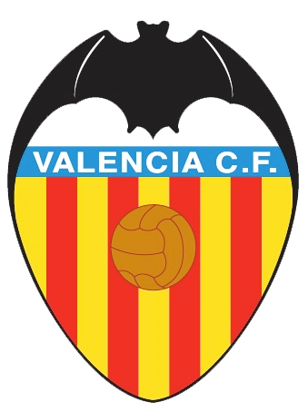
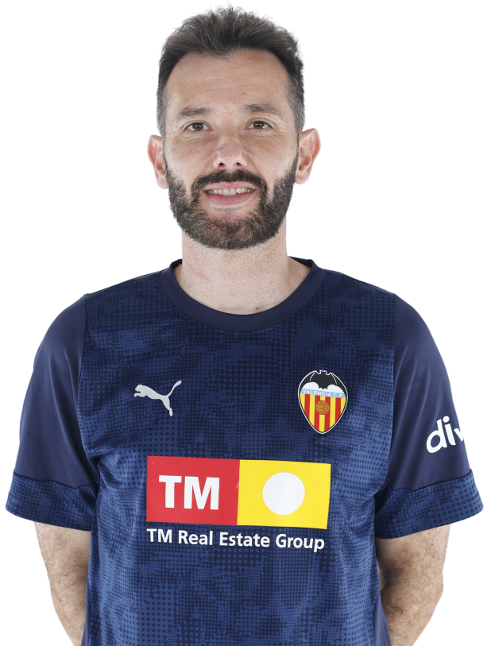
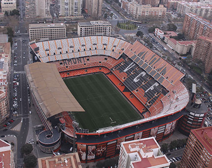

Treinador: Carlos Corberán
Carlos Corberán, nascido a 7 de abril de 1983 em Cheste, Valência, é atualmente o treinador principal do Valencia CF, tendo assumido o cargo em dezembro de 2024 após a saída de Rubén Baraja.

Estádio: Mestalla
Inaugurado a 20 de maio de 1923, o Estádio de Mestalla é o mais antigo da primeira divisão espanhola e o verdadeiro coração pulsante do Valencia CF.

Estilo de Jogo:
Carlos Corberán, que assumiu o comando do Valencia CF em dezembro de 2024, implementou um estilo de jogo caracterizado pela verticalidade e pela adaptabilidade tática.
"Amunt València!"